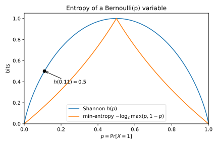
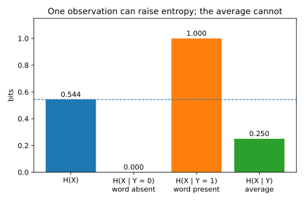
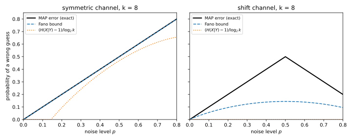

5 Information theory
You observe something, such as a word in an email, and you want to know how much it tells you about something you cannot see, such as whether the email is spam. Information theory measures “how much” in two ways, because there are two questions you might ask. The first is how many bits, on average, the observation saves you when you describe the hidden value, and Shannon entropy and mutual information answer it. The second is how much more likely a single best guess is to be right once you have seen the observation, and min-entropy answers that one. Later parts need both views, and the places where they disagree.
Every quantity here is built from the logarithm of a probability, either averaged over the outcomes or taken at the most likely one. So almost every proof does one of two things. It compares the average of a logarithm with the logarithm of an average, which Jensen’s inequality does because the logarithm is concave. Or it takes logarithms of the product rule for probabilities to turn it into a sum. Logarithms are base 2, so quantities are in bits. Divergences uses the natural logarithm \(\ln\), whose unit is the nat, so a value in nats is this chapter’s value in bits times \(\ln 2\).
The running example is a spam filter’s keyword. One email in eight is spam, every spam email contains the word “offer”, and so does one in seven legitimate (ham) emails. The first two sections measure what the keyword says about the label, and Section 5.5 shows that it does not help someone who must guess the label.
5.1 Shannon entropy
How uncertain is a random variable? A fair coin should count as one unit of uncertainty, two fair coins as two, and a coin that always lands heads as zero. Shannon entropy is the measure with these properties. The rarer an outcome, the more it tells you when it happens, so the definition gives each outcome a number that grows as its probability shrinks, and averages it.
Definition 5.1 (Entropy) Let \(X\) be a discrete random variable with distribution \(p\). The surprisal of an outcome \(x\) is \(\log_2(1/p(x))\) bits, so an outcome of probability \(\frac14\) carries 2 bits. The entropy of \(X\) is its average surprisal, \[H(X) = -\sum_x p(x)\log_2 p(x) = \mathbb E\left[\log_2\frac{1}{p(X)}\right], \tag{5.1}\] with the convention \(0\log_2 0 = 0\), so that impossible outcomes contribute nothing. For a variable that is 1 with probability \(t\) and 0 otherwise, the sum has two terms and is the binary entropy function \[h(t) = -t\log_2 t - (1 - t)\log_2(1 - t). \tag{5.2}\]
Entropy cannot be negative, because no surprisal is, and it should be largest when no outcome is favoured. The proof of the upper bound measures how far the distribution is from uniform. For two distributions \(p\) and \(q\) on the same finite set, with \(q\) positive wherever \(p\) is, the Kullback–Leibler (KL) divergence is \[D_{\mathrm{KL}}(p\,\|\,q) = \sum_x p(x)\log_2\frac{p(x)}{q(x)}, \tag{5.3}\] the average over outcomes drawn from \(p\) of the log of how much more likely each outcome is under \(p\) than under \(q\). Divergences proves Gibbs’ inequality for it: the divergence is never negative, and it is zero only when \(p = q\).
Theorem 5.1 (Range of the entropy) Let \(X\) take values in a finite set \(\mathcal X\) with \(\lvert\mathcal X\rvert\) elements. Then \[0 \le H(X) \le \log_2\lvert\mathcal X\rvert. \tag{5.4}\] The lower bound holds with equality exactly when \(X\) is constant, and the upper bound exactly when \(X\) is uniform on \(\mathcal X\).
Proof.
- Lower bound. Every probability is at most 1, so every surprisal and every term of the sum is non-negative. A sum of non-negative terms is zero only if every term is, and a term is zero only when its probability is 0 or 1. So zero entropy forces one value to have probability 1.
- Rewrite the constant. Write \(u\) for the uniform distribution, which gives each value probability \(1/\lvert\mathcal X\rvert\). The probabilities \(p(x)\) sum to 1, so the constant \(\log_2\lvert\mathcal X\rvert\) is the average of \(\log_2(1/u(x))\) under \(p\), and subtracting \(H(X)\) term by term combines two logarithms in each term: \[\log_2\lvert\mathcal X\rvert - H(X) = \sum_x p(x)\log_2\frac{p(x)}{u(x)} = D_{\mathrm{KL}}(p\,\|\,u). \tag{5.5}\]
- Upper bound. Gibbs’ inequality makes the right side non-negative, and zero only when \(p = u\). So \(H(X) \le \log_2\lvert\mathcal X\rvert\), with equality only for the uniform distribution.
For two variables you also need the uncertainty left about one once the other is known. Their joint distribution is a table \(p(x, y)\), with one row for each value of \(X\) and one column for each value of \(Y\). The sum of a row is the marginal probability \(p(x)\), and the sum of a column is \(p(y)\). Before you observe \(Y\) you do not know which value you will see, so the uncertainty left about \(X\) is an average over those values.
Definition 5.2 (Joint and conditional entropy) Let \(X\) and \(Y\) take finitely many values, with joint distribution \(p(x, y)\). The joint entropy \(H(X, Y)\) is the entropy of the pair. Once you observe \(Y = y\), the uncertainty about \(X\) is the entropy \(H(X \mid Y = y)\) of its distribution \(p(x \mid y)\) given that value. The conditional entropy is its average over the observation, \[H(X \mid Y) = \sum_y p(y)\,H(X \mid Y = y). \tag{5.6}\]
The uncertainty in a pair should be the uncertainty in one variable plus what remains of the other once the first is known. Logarithms turn the product rule for probabilities into a sum rule for surprisals, and averaging keeps sums.
Theorem 5.2 (Chain rule) For any two discrete random variables \(X\) and \(Y\), \[H(X, Y) = H(Y) + H(X \mid Y) = H(X) + H(Y \mid X). \tag{5.7}\]
Proof.
- Turn the product into a sum. For every pair with \(p(x, y) > 0\), the product rule gives \(p(x, y) = p(y)\,p(x \mid y)\). Taking \(\log_2(1/\cdot)\) of both sides gives \[\log_2\frac{1}{p(x, y)} = \log_2\frac{1}{p(y)} + \log_2\frac{1}{p(x \mid y)}. \tag{5.8}\]
- Average over the pair. The left side averages to \(H(X, Y)\) and the first term on the right to \(H(Y)\). Grouped by \(y\), the second term averages to \(H(X \mid Y = y)\) within each column, and then over \(y\) to \(H(X \mid Y)\).
- Swap the roles. Starting from \(p(x, y) = p(x)\,p(y \mid x)\) instead, the same two steps give the second form.
Applying Equation 5.7 one variable at a time extends the chain rule to any number of variables. Figure 5.1 shows the binary entropy, which is 1 bit for a fair coin and zero for a certain one. It rises steeply near the ends, so a coin with only an 11% chance of heads already keeps \(h(0.11) = 0.4999\) bits, half the fair coin’s.
Learning something should not make you more uncertain on average, as Section 5.2 proves. But a rare observation can push you from a confident belief into a toss-up, as the running example shows.

Example 5.1 Let \(X\) be the label of an email, ham or spam, and \(Y\) whether it contains the word “offer”. Ham emails are \(\frac78\) of the total and one in seven of them contains the word, so ham emails with the word are \(\frac18\) of all emails and those without it are \(\frac34\) (Table 5.1).
| \(Y = 0\) (absent) | \(Y = 1\) (present) | \(p(x)\) | |
|---|---|---|---|
| ham | 3/4 | 1/8 | 7/8 |
| spam | 0 | 1/8 | 1/8 |
| \(p(y)\) | 3/4 | 1/4 |
Before you look at the email, the label is spam with probability \(\frac18\), so \(H(X) = h(1/8) = 0.5436\) bits. If the word is absent, the email is certainly ham, so \(H(X \mid Y = 0) = 0\). If the word is present, ham and spam each have probability \(\frac18\) out of \(\frac14\), so they are equally likely and \(H(X \mid Y = 1) = 1\) bit. So seeing the word made you more uncertain than before.
On average, though, the word helps. It is absent with probability \(\frac34\), so \(H(X \mid Y) = \frac34\cdot0 + \frac14\cdot1 = 0.25\) bits, less than \(H(X)\) (Figure 5.2). The chain rule checks out on the same table. \(H(Y) = h(1/4) = 0.8113\), and \(H(Y) + H(X \mid Y) = 1.0613\) is the entropy of the three non-zero cells \((\frac34, \frac18, \frac18)\).

5.2 Mutual information
How much does observing \(Y\) tell you about \(X\)? A natural answer is the drop in uncertainty it causes on average, the information gain. The spam example showed that one observation can raise the uncertainty, so you need to know that the average drop is never negative. It is a KL divergence, which makes it non-negative and symmetric in \(X\) and \(Y\). It also obeys a rule that much of the book uses: processing cannot create information.
Definition 5.3 (Mutual information) The mutual information between two discrete random variables \(X\) and \(Y\) is the average drop in uncertainty about \(X\) from seeing \(Y\), \[I(X; Y) = H(X) - H(X \mid Y). \tag{5.9}\] Given a third variable \(Z\), the conditional mutual information \(I(X; Y \mid Z) = H(X \mid Z) - H(X \mid Y, Z)\), where conditioning on \(Y, Z\) means conditioning on the pair, is what \(Y\) adds about \(X\) beyond what \(Z\) already told you.
Mutual information is also a measure of dependence. It compares the joint table with the product of its marginals, the table that \(X\) and \(Y\) would have if they were independent.
Theorem 5.3 (Mutual information is a KL divergence) Let \(X\) and \(Y\) be discrete, write \(P_{XY}\) for their joint distribution and \(P_XP_Y\) for the product of its marginals. Then \[I(X; Y) = D_{\mathrm{KL}}\big(P_{XY}\,\big\|\,P_XP_Y\big) = \sum_{x, y}p(x, y)\log_2\frac{p(x, y)}{p(x)\,p(y)}. \tag{5.10}\] So mutual information is symmetric, \(I(X; Y) = I(Y; X) = H(Y) - H(Y \mid X)\). It is non-negative, and it is zero if and only if \(X\) and \(Y\) are independent. Conditional mutual information is the average over \(z\) of the same divergence computed from the distributions given \(Z = z\), marked with a subscript \(z\), so it is non-negative too: \[I(X; Y \mid Z) = \sum_z p(z)\,D_{\mathrm{KL}}\big(P_{XY\mid z}\,\big\|\,P_{X\mid z}P_{Y\mid z}\big) \ge 0. \tag{5.11}\]
Proof. The plan is to write both entropies as averages over the same pairs \((x, y)\), combine them term by term into one sum, and read the properties off that sum.
- Average over pairs. Each \(p(x)\) is the sum of its row, so \(H(X)\) is an average over pairs. So is \(H(X \mid Y)\), by Definition 5.2 and \(p(y)\,p(x \mid y) = p(x, y)\): \[H(X) = \sum_{x, y}p(x, y)\log_2\frac{1}{p(x)}, \qquad H(X \mid Y) = \sum_{x, y}p(x, y)\log_2\frac{1}{p(x \mid y)}. \tag{5.12}\]
- Subtract. Combining the two logarithms in each term gives \[I(X; Y) = \sum_{x, y}p(x, y)\log_2\frac{p(x \mid y)}{p(x)}. \tag{5.13}\]
- Bring in the joint. Multiply the fraction by \(p(y)/p(y)\). The product rule \(p(x \mid y)\,p(y) = p(x, y)\) turns it into \(\frac{p(x, y)}{p(x)\,p(y)}\), which gives Equation 5.10.
- Read off the properties. The sum in Equation 5.10 does not change when \(X\) and \(Y\) swap roles, and steps 1 to 3 with the roles swapped give \(H(Y) - H(Y \mid X)\). Gibbs’ inequality makes the divergence non-negative, and zero only if the joint table equals the product of its marginals, which is the definition of independence.
- Condition on \(Z\). Both entropies in \(I(X; Y \mid Z)\) are averages over \(z\) of entropies computed from the distribution given \(Z = z\). For \(H(X \mid Y, Z)\) this is Definition 5.2 with the pair’s values grouped by \(z\). So it is the average over \(z\) of a mutual information, and steps 1 to 4 make each one a non-negative divergence.
The theorem settles the question the spam example left open: the average drop in uncertainty is never negative. Its corollary also bounds the uncertainty of a pair by the sum of the two uncertainties, which Section 5.7 needs.
Corollary 5.1 (Conditioning reduces entropy on average) For any two discrete random variables \(X\) and \(Y\), \[H(X \mid Y) \le H(X), \qquad H(X, Y) \le H(X) + H(Y), \tag{5.14}\] each with equality if and only if \(X\) and \(Y\) are independent.
Proof.
- The first inequality. The gap \(H(X) - H(X \mid Y)\) is \(I(X; Y)\), which Theorem 5.3 shows is non-negative and zero exactly under independence.
- The second inequality. By Equation 5.7, \(H(X, Y) = H(Y) + H(X \mid Y)\), and step 1 bounds the last term by \(H(X)\), with the same case of equality.
What a pair \((Y, Z)\) tells you about \(X\) is what \(Y\) tells you, plus what \(Z\) adds once \(Y\) is known. The data-processing inequality below uses this split twice.
Proposition 5.1 (Chain rule for mutual information) For any three discrete random variables \(X\), \(Y\) and \(Z\), \[I(X; Y, Z) = I(X; Y) + I(X; Z \mid Y). \tag{5.15}\]
Proof.
- The total drop. By Definition 5.3, \(I(X; Y, Z) = H(X) - H(X \mid Y, Z)\), the drop in uncertainty from knowing nothing to knowing the pair.
- Pass through an intermediate stage. Add and subtract the uncertainty \(H(X \mid Y)\) that remains when only \(Y\) is known: \[I(X; Y, Z) = \big[H(X) - H(X \mid Y)\big] + \big[H(X \mid Y) - H(X \mid Y, Z)\big]. \tag{5.16}\]
- Name the two brackets. The first is the drop from learning \(Y\), which is \(I(X; Y)\), and the second is the further drop from learning \(Z\) when \(Y\) is known, which is \(I(X; Z \mid Y)\).
Denoising, feature extraction and training a model all compute something from data. If the result \(Z\) is computed from \(Y\) alone, it should not know more about \(X\) than \(Y\) does.
Theorem 5.4 (Data-processing inequality) Let \(X\), \(Y\) and \(Z\) be discrete random variables such that \(X\) and \(Z\) are independent given \(Y\). This is called a Markov chain, written \(X \to Y \to Z\), and it holds whenever \(Z\) is computed from \(Y\) alone, possibly with randomness independent of \(X\) and \(Y\). Then \[I(X; Z) \le I(X; Y), \tag{5.17}\] with equality if and only if \(I(X; Y \mid Z) = 0\).
Proof. The plan is to expand what the pair \((Y, Z)\) tells you about \(X\) in two orders. In one order the part that \(Z\) adds after \(Y\) is zero.
- Expand twice. Proposition 5.1 with \(Z\) first and with \(Y\) first gives \[I(X; Z) + I(X; Y \mid Z) = I(X; Y, Z) = I(X; Y) + I(X; Z \mid Y). \tag{5.18}\]
- Use the Markov chain. Given each value of \(Y\), the variables \(X\) and \(Z\) are independent, so each divergence in the conditional form of Theorem 5.3 compares two identical distributions, and \(I(X; Z \mid Y) = 0\).
- Drop a non-negative term. Hence \(I(X; Z) = I(X; Y) - I(X; Y \mid Z)\). The subtracted term is non-negative by Theorem 5.3, and it is zero exactly in the case of equality.
In the case of equality, \(Z\) has kept everything in \(Y\) that matters for \(X\), and it is called a sufficient statistic for \(X\). An invertible function \(Z\) of \(Y\) is one. You can compute \(Y\) back from \(Z\), so the chain \(X \to Z \to Y\) is also Markov, and Theorem 5.4 also gives \(I(X; Y) \le I(X; Z)\).
Mutual information is an average over both \(x\) and \(y\). So a small value can hide a few outcomes in which \(Y\) reveals \(X\) completely, and Section 5.6 shows how far apart the average and the worst case can be.
Example 5.2 In the spam table, the keyword reduced the uncertainty from 0.5436 bits to 0.25 bits on average, so \(I(X; Y) = 0.2936\) bits. The script (Section 5.8) gets the same value from Equation 5.10 and from \(H(Y) - H(Y \mid X)\).
Now suppose a sloppy tokenizer detects the keyword and gets the answer wrong with probability 0.1, and call its output \(Z\). The tokenizer looks only at the word, so \(X \to Y \to Z\) is a Markov chain. The script finds \(I(X; Z) = 0.1668\) bits, below \(I(X; Y)\) as Theorem 5.4 predicts. So the noisy feature carries 57% of the information of the clean one, and a 10% error rate costs over 40% of the information.
5.3 Channels and capacity
The sloppy tokenizer is a channel, which turns an input into a random output, and so is a noisy storage device. You control how often each input is sent, but not the noise. How much information can one use of the channel carry at best? That maximum is the capacity. Shannon’s channel coding theorem, not proved here, says that it is the largest number of data bits per use of the channel that long codes can send with an error probability as small as you like.
Definition 5.4 (Channel and capacity) A channel from \(X\) to \(Y\) is a table \(K\) whose entry \(K[x, y] = p(y \mid x)\) says how likely the output \(y\) is given the input \(x\). Each row sums to 1, because some output must occur. A prior \(\pi(x)\) says how likely each input is, and the product rule gives the joint table \(p(x, y) = \pi(x)\,K[x, y]\).
The capacity of the channel is the largest mutual information between input and output over all priors, \[\mathcal C = \max_{\pi}I(X; Y), \qquad X \sim \pi,\quad Y \mid X = x \sim K[x, \cdot]. \tag{5.19}\] The binary symmetric channel \(\mathrm{BSC}(p)\) has inputs and outputs in \(\{0, 1\}\), and it flips the input with probability \(p\), a number here rather than a distribution.
The tokenizer is \(\mathrm{BSC}(0.1)\). The capacity of a binary symmetric channel should be one bit, the most a binary output can carry, minus the uncertainty that the noise adds.
Theorem 5.5 (Capacity of the binary symmetric channel) For every flip probability \(p \in [0, 1]\), the capacity of \(\mathrm{BSC}(p)\) is \[\mathcal C_{\mathrm{BSC}}(p) = 1 - h(p), \tag{5.20}\] and the uniform input attains it.
Proof. The plan is to split the information into the output’s uncertainty minus the noise’s, show that the noise part does not depend on the prior, and then make the output as uncertain as possible. Write \(\pi_1\) for the probability that the input is 1.
- Split the information. By Theorem 5.3, \(I(X; Y) = H(Y) - H(Y \mid X)\).
- The noise part is fixed. Given either input, the output is flipped with probability \(p\), so \(H(Y \mid X = x) = h(p)\) for both inputs, and their average \(H(Y \mid X)\) is \(h(p)\) whatever \(\pi_1\) is.
- Bound the output part. The output takes two values, so \(H(Y) \le \log_2 2 = 1\) by Theorem 5.1, with equality if and only if the output is uniform.
- The uniform input attains the bound. The output is 1 when the input is 1 and is not flipped, or the input is 0 and is flipped, so \[\Pr[Y = 1] = \pi_1(1 - p) + (1 - \pi_1)p. \tag{5.21}\] At \(\pi_1 = \frac12\) this is \(\frac12\), so the uniform input makes the output uniform, and the largest information is \(1 - h(p)\).
Figure 5.3 (left) shows the information as a function of the input prior, a hump that peaks at the uniform input for every \(p\) and falls fast away from it. At \(p = 0.11\) and \(\pi_1 = 0.2\), for example, the output is 1 with probability 0.266, so the channel carries only \(h(0.266) - h(0.11) = 0.3358\) bits, against 0.5001 at the uniform input. The right panel shows that the capacity is zero at \(p = \frac12\), where the output is a fair coin whatever the input. The capacity is symmetric about \(\frac12\), because a receiver can flip every output of a channel that almost always flips.
For channels without this symmetry, the maximum over priors has no closed form, and the Blahut–Arimoto algorithm computes it numerically. The script uses it to check Equation 5.20.

Example 5.3 A cheap storage medium flips each stored bit independently with probability 0.11, so its capacity is \(1 - h(0.11) = 0.5001\) bits per stored bit. So codes that add redundant bits to correct errors can store about one bit of data per two raw bits, with an error rate as small as you like, and by the channel coding theorem no code can do better.
5.4 Min-entropy and guessing
Shannon entropy counts the bits needed to describe a value on average. A different question is how likely you are to guess the value in one try. A password chosen by a person might have high entropy and still be guessed one time in ten, because one popular choice dominates. A guess \(g\) is right with probability \(p(g)\), so the best single guess is the most likely value.
Definition 5.5 (Vulnerability and min-entropy) Let \(X\) be a discrete random variable with distribution \(p\). The vulnerability of \(X\) is the success probability of the best single guess, and the min-entropy puts it on the same bit scale as entropy by taking its negative logarithm: \[V(X) = \max_x p(x), \qquad H_\infty(X) = -\log_2 V(X). \tag{5.22}\]
A fair coin has \(V = \frac12\) and \(H_\infty = 1\) bit, the same as its Shannon entropy. In general, min-entropy is the surprisal of the most likely outcome, which is the smallest surprisal, while Shannon entropy averages all of them. An average is at least its smallest value, so min-entropy is never larger.
Proposition 5.2 (Min-entropy is at most Shannon entropy) Let \(X\) take values in a finite set \(\mathcal X\). Then \[H_\infty(X) \le H(X) \le \log_2\lvert\mathcal X\rvert, \tag{5.23}\] with equality in the first inequality if and only if \(X\) is uniform on its support, the set of values it takes with positive probability.
Proof.
- Compare each surprisal with the smallest. Every outcome has \(p(x) \le V(X)\), so its surprisal is at least \(\log_2(1/V(X)) = H_\infty(X)\).
- Average. The entropy \(H(X)\) is the average of the surprisals, so it is at least \(H_\infty(X)\). The second inequality is Theorem 5.1.
- Equality. Equality in step 2 needs every surprisal in the support to equal the smallest one, that is \(p(x) = V(X)\) for every \(x\) with \(p(x) > 0\).
Min-entropy has a direct reading: a value with a min-entropy of \(r\) bits is exactly as hard to guess in one try as a uniform string of \(r\) bits, however large its Shannon entropy is. For a coin, Figure 5.1 shows the gap, with a kink in the min-entropy where the most likely outcome changes.
Both entropies are the ends of one family, the Rényi entropy of order \(\alpha\), \[H_\alpha(X) = \frac{1}{1 - \alpha}\log_2\sum_x p(x)^\alpha. \tag{5.24}\] As \(\alpha \to \infty\) the largest probability dominates the sum and the formula tends to \(H_\infty\), and as \(\alpha \to 1\) it tends to \(H\), as Section F.4 derives.
Example 5.4 A password shows the gap between the two entropies better than the two-valued spam label. A uniform 4-digit PIN has \(H = H_\infty = \log_2 10{,}000 = 13.2877\) bits. Now suppose 10% of people choose 1234 and the rest choose uniformly among the other 9,999 PINs.
The Shannon entropy is \(H = 12.4278\) bits, less than a bit below the uniform case. To see where it comes from, apply the chain rule to \(X\) and the indicator \(B\) of “the PIN is 1234”. Since \(B\) is a function of \(X\), \[H(X) = H(X, B) = H(B) + H(X \mid B). \tag{5.25}\] Revealing whether the PIN is 1234 costs \(h(0.1) = 0.4690\) bits. Then, in the 90% of cases where it is not, revealing which of the others it is costs \(\log_2 9{,}999\) bits, or \(0.9\log_2 9{,}999\) on average. That gives \(0.4690 + 11.9588 = 12.4278\).
But the min-entropy is \(H_\infty = \log_2 10 = 3.3219\) bits, because the best guess, 1234, succeeds with probability \(0.1\). So the Shannon entropy says that this PIN distribution is almost as good as uniform, while the min-entropy says that one guess in ten succeeds.
5.5 Conditional min-entropy and min-entropy leakage
Now the guesser sees an observation \(Y\) before guessing the hidden value \(X\), which this section calls the secret. How much does that help? Smith (2009) answers with a success probability again, that of the best guessing strategy that may depend on what was observed. The leakage compares it with the vulnerability before the observation.
Definition 5.6 (Posterior vulnerability and min-entropy leakage) A guessing strategy \(g\) assigns a guess \(g(y)\) to each observation \(y\). The posterior vulnerability \(V(X \mid Y)\) is the largest success probability \(\Pr[X = g(Y)]\) of any strategy, and the conditional min-entropy is its negative logarithm, \[H_\infty(X \mid Y) = -\log_2 V(X \mid Y). \tag{5.26}\]
For a prior \(\pi\) and a channel \(K\), the min-entropy leakage \(\mathcal L(\pi, K)\) is the factor by which the observation multiplies the chance of a correct guess, measured in bits, and the min-capacity \(\mathcal{ML}(K)\) is its worst case over priors: \[\mathcal L(\pi, K) = \log_2\frac{V(X \mid Y)}{V(X)} = H_\infty(X) - H_\infty(X \mid Y), \qquad \mathcal{ML}(K) = \max_\pi\mathcal L(\pi, K). \tag{5.27}\]
The guesser’s choice for one observation does not affect its success on any other, so it can make the best choice one column of the joint table at a time.
Proposition 5.3 (The best strategy is the MAP guess) For a joint distribution \(p(x, y)\), the posterior vulnerability is the sum of the column maxima of the joint table, \[V(X \mid Y) = \sum_y\max_x p(x, y) = \sum_y p(y)\max_x p(x \mid y), \tag{5.28}\] and the strategy that attains it guesses, for each \(y\), the value with the largest posterior probability \(p(x \mid y)\). That guess is the maximum a posteriori (MAP) guess.
Proof.
- Write the success as a sum over columns. A strategy \(g\) succeeds with probability \(\sum_y p(g(y), y)\), so it picks one cell from each column of the joint table and its success is the sum of the picked cells.
- Optimize each column. The guess \(g(y)\) affects only the term for \(y\), so the best choice in that column is the row with the largest entry. Dividing the column by \(p(y)\) does not change which row is largest, so this row is also the MAP guess.
- Rewrite. Summing the column maxima gives the first form, and \(p(x, y) = p(y)\,p(x \mid y)\) gives the second, the average over \(y\) of the vulnerability of the posterior distribution.
The min-capacity needs no maximization at all. The proof bounds the posterior vulnerability by pulling the prior out of each column maximum, and the uniform prior loses nothing in that step.
Theorem 5.6 (Min-capacity) Let \(K\) be a channel from a finite set \(\mathcal X\) of secrets to a finite set \(\mathcal Y\) of observations. Then \[\mathcal{ML}(K) = \log_2\sum_y\max_x K[x, y], \tag{5.29}\] the uniform prior attains it, and \(0 \le \mathcal{ML}(K) \le \log_2\min(\lvert\mathcal X\rvert, \lvert\mathcal Y\rvert)\).
Proof. The plan is to bound the leakage for every prior, show that the uniform prior attains the bound, and then bound the sum of the column maxima from both sides.
- Pull the prior out. By Proposition 5.3 with \(p(x, y) = \pi(x)K[x, y]\), the posterior vulnerability is a sum of column maxima. In each column, the largest product is at most the largest prior times the largest channel entry: \[\max_x\pi(x)K[x, y] \le V(X)\max_x K[x, y]. \tag{5.30}\]
- Bound the leakage. Summing over \(y\) and dividing by \(V(X)\) gives \(V(X \mid Y)/V(X) \le \sum_y\max_x K[x, y]\) for every prior. Taking \(\log_2\) bounds \(\mathcal L(\pi, K)\) by the right side of Equation 5.29.
- The uniform prior attains it. Under the uniform prior, \(\pi(x) = V(X)\) for every \(x\), so the constant comes out of the maximum, step 1 is an equality, and the bound is reached.
- The range. Each column maximum is at most 1, so the sum is at most \(\lvert\mathcal Y\rvert\). Each is also at most its column sum, so the sum is at most the total of all entries, which is \(\lvert\mathcal X\rvert\) because each row sums to 1. Finally, the column maxima are at least the entries of any one row, so the sum is at least 1.
A leakage of 1 bit means that the observation doubles the chance of a correct first guess. That is why min-entropy is the usual measure in quantitative information flow, the field that studies what a program’s outputs reveal about its secret inputs. The min-capacity bounds the leakage for every prior with one number computed from the channel alone. For \(\mathrm{BSC}(p)\) both column maxima are \(\max(p, 1 - p)\), so at \(p = 0.11\) the min-capacity is \(\log_2(2 \times 0.89) = 0.8319\) bits against a Shannon capacity of 0.5001 (Figure 5.3, right).
Example 5.5 In the spam table, the column maxima are \(\frac34\) and \(\frac18\), so by Equation 5.28, \(V(X \mid Y) = \frac78\). That is exactly \(V(X)\), so the leakage is 0. The keyword carries 0.2936 bits of Shannon information, yet a guesser who must name the label says “ham” whatever it sees and gains nothing.
A table where guessing does improve shows each step. A secret \(X\) takes four values with prior \(\pi = (0.4, 0.3, 0.2, 0.1)\), and an observation \(Y\) takes three values, through the channel in Table 5.2. Multiplying each row by its prior gives the joint table (Table 5.3, Figure 5.4).
| \(K[x, y]\) | \(y_1\) | \(y_2\) | \(y_3\) |
|---|---|---|---|
| \(x_1\) | 0.8 | 0.2 | 0 |
| \(x_2\) | 0.1 | 0.8 | 0.1 |
| \(x_3\) | 0 | 0.5 | 0.5 |
| \(x_4\) | 0 | 0.2 | 0.8 |
| \(p(x, y)\) | \(y_1\) | \(y_2\) | \(y_3\) |
|---|---|---|---|
| \(x_1\) | 0.32 | 0.08 | 0 |
| \(x_2\) | 0.03 | 0.24 | 0.03 |
| \(x_3\) | 0 | 0.10 | 0.10 |
| \(x_4\) | 0 | 0.02 | 0.08 |
| \(p(y)\) | 0.35 | 0.44 | 0.21 |
Without the observation, the best guess is \(x_1\), right with probability \(V(X) = 0.4\). With it, the MAP guesser picks the bold cell in each column and succeeds with probability \(0.32 + 0.24 + 0.10 = 0.66\), so \(H_\infty(X \mid Y) = 0.5995\) bits. On \(y_3\) it picks \(x_3\) although the channel entry for \(x_4\) is larger, because \(x_3\) is twice as likely a priori. A million simulated draws give a success rate of 0.6594.
The leakage is \(\log_2(0.66/0.4) = 0.7225\) bits, while the mutual information of the same table is 0.6865 bits, so here the two measures nearly agree. Every column of the channel has maximum 0.8, so by Equation 5.29 the min-capacity is \(\log_2 2.4 = 1.2630\) bits, against a Shannon capacity of 0.8269 from Blahut–Arimoto.

5.6 Shannon leakage versus min-entropy leakage
Shannon leakage, which is the mutual information \(I(X; Y)\), and min-entropy leakage both measure how much an observation reveals about a secret, and the spam keyword showed that they can disagree. The disagreement can be huge. It comes from channels that reveal the secret completely on a few outcomes and nothing on the rest. Later parts state guarantees in one measure or the other, so you need to know which channels separate them.
Definition 5.7 (Two families of deterministic channels) Let the secret \(X\) be uniform on the strings of \(w\) bits. A channel is deterministic when its output is a fixed function of its input. The channel reveal-low(\(m\)) always outputs the lowest \(m\) bits of \(X\). The channel reveal-if-zero(\(j\)) outputs \(X\) itself if its lowest \(j\) bits are all zero, which happens with probability \(2^{-j}\), and a fixed symbol \(\bot\) otherwise.
The first family reveals part of the secret every time, and the second reveals all of it, but rarely. For deterministic channels both leakages come down to counting outputs, which makes them easy to compare.
Proposition 5.4 (Leakages of the two families) For reveal-low(\(m\)), both leakages equal \(m\) bits. For reveal-if-zero(\(j\)) with \(1 \le j \le w\), \[I(X; Y) = 2^{-j}w + (1 - 2^{-j})\log_2\frac{1}{1 - 2^{-j}}, \qquad \mathcal L = \log_2\big(2^{w-j} + 1\big). \tag{5.31}\]
Proof. The plan is to reduce Shannon leakage to the entropy of the output and min-entropy leakage to the number of outputs, and then to count for each family.
- Shannon leakage is the output’s entropy. The output is fixed once the input is known, so \(H(Y \mid X) = 0\), and by Theorem 5.3, \(I(X; Y) = H(Y)\).
- Min-entropy leakage counts outputs. Under the uniform prior every input has probability \(2^{-w}\), so every non-zero entry of the joint table is \(2^{-w}\). Each column maximum is then \(V(X)\), and the ratio \(V(X \mid Y)/V(X)\) is the number of distinct outputs.
- reveal-low(\(m\)). The lowest \(m\) bits of a uniform string are uniform on \(2^m\) values, so \(H(Y) = m\), and there are \(2^m\) distinct outputs.
- reveal-if-zero(\(j\)), the outputs. There are \(2^{w-j}\) strings whose lowest \(j\) bits are zero, each output as itself with probability \(2^{-w}\), and every other string gives \(\bot\). So there are \(2^{w-j} + 1\) distinct outputs, which gives \(\mathcal L\).
- reveal-if-zero(\(j\)), the entropy. The revealed outputs each have surprisal \(w\) and together have probability \(2^{-j}\), while \(\bot\) has the remaining probability. Averaging the surprisals gives the stated \(H(Y)\).
The script checks both closed forms against the explicit channel tables for \(w = 6\). Figure 5.5 plots the two leakages for \(w = 64\). At large \(j\) the reveal-if-zero family has almost no Shannon leakage and almost total min-entropy leakage.
The reason is where the logarithm sits. Shannon leakage averages the logarithm over outcomes, so an outcome of probability \(2^{-j}\) that reveals \(w\) bits adds only \(2^{-j}w\). Min-entropy leakage takes the logarithm of an averaged probability, and the same outcome raises the guessing success from \(2^{-w}\) to more than \(2^{-j}\), a gain of \(w - j\) bits.

Example 5.6 On a 64-bit secret, compare reveal-if-zero(3), which outputs the whole secret one time in eight, with reveal-low(9). For reveal-if-zero(3), the Shannon leakage is \(2^{-3}\cdot64 + \frac78\log_2\frac87 = 8.1686\) bits, and the guesser’s success is just above \(\frac18\), because it wins whenever the secret is revealed. For reveal-low(9), both leakages are 9 bits, and the guesser must still guess the other 55 bits (Table 5.4).
| Channel | Shannon leakage | Min-entropy leakage | One-guess success |
|---|---|---|---|
| reveal-if-zero(3) | 8.1686 bits | 61.0000 bits | 0.1250 |
| reveal-low(9) | 9.0000 bits | 9.0000 bits | \(2.78\times10^{-17}\) |
So by Shannon leakage, reveal-low(9) is the leakier channel, while by one-guess success, reveal-if-zero(3) is worse by a factor of \(0.125/(2.78\times10^{-17}) \approx 4.5\times10^{15}\). Smith (2009) used a pair of programs like these to argue that Shannon leakage is the wrong measure for one-try guessing.
The extreme case is \(j = w\), a channel that reveals the secret only if it is all zeros. For a 4-bit secret the Shannon leakage is \(h(1/16) = 0.3373\) bits. The min-entropy leakage is exactly 1 bit, because the guesser wins on seeing 0000 and otherwise picks one of 15 values, so its success doubles to \(\frac1{16} + \frac{15}{16}\cdot\frac1{15}\). Both numbers are small next to the 4 bits of the secret, and both miss that for the one secret value 0000 the channel reveals everything. Any measure that averages over the secret can hide a fully exposed value, so a worst-case question needs a worst-case measure, which later parts build.
5.7 Fano’s inequality
Mutual information also gives lower bounds, statements that no estimator can do better than some error rate. You need them to show that a problem is hard rather than that a method is good. Fano’s inequality is the basic tool. It says that if \(X\) is still uncertain after seeing \(Y\), every guess of \(X\) from \(Y\) must often be wrong. The reason is that, once the guess is known, describing \(X\) takes only two pieces: whether the guess was right, and, if it was wrong, which other value \(X\) is.
Theorem 5.7 (Fano’s inequality) Let \(X\) take values in a finite set of \(k\) elements, and let \(\hat X\) be any estimate of \(X\) computed from \(Y\), possibly with extra randomness independent of \(X\) and \(Y\). Write \(P_e\) for its error probability, \[P_e = \Pr[\hat X \ne X]. \tag{5.32}\] Then \[H(X \mid Y) \le h(P_e) + P_e\log_2(k - 1), \tag{5.33}\] and as a consequence \[P_e \ge \frac{H(X \mid Y) - 1}{\log_2 k}. \tag{5.34}\]
Proof. The plan is to expand the uncertainty of the error together with \(X\) in two orders, bound the pieces of one order, carry the bound from \(\hat X\) to \(Y\), and weaken it. Write \(E = \mathbf 1[\hat X \ne X]\) for the error indicator, which is 1 when the guess is wrong.
- Expand in two orders. Every entropy in steps 1 to 4 is conditioned on \(\hat X\). The chain rule Equation 5.7 holds given each value of \(\hat X\), so it also holds for the average over \(\hat X\), and revealing \(X\) first or \(E\) first gives \[H(X \mid \hat X) + H(E \mid X, \hat X) = H(E, X \mid \hat X) = H(E \mid \hat X) + H(X \mid E, \hat X). \tag{5.35}\] Given both \(X\) and \(\hat X\) you know whether they differ, so \(H(E \mid X, \hat X) = 0\).
- Bound the error’s uncertainty. By Corollary 5.1, \(H(E \mid \hat X) \le H(E)\), which is \(h(P_e)\) because \(E\) is 1 with probability \(P_e\).
- Bound what remains of \(X\). If \(E = 0\), then \(X = \hat X\) and no uncertainty is left. If \(E = 1\), then \(X\) is one of the \(k - 1\) other values, so its entropy is at most \(\log_2(k - 1)\) by Theorem 5.1. Averaging over \(E\) bounds \(H(X \mid E, \hat X)\) by \(P_e\log_2(k - 1)\).
- Combine. Steps 1 to 3 give \[H(X \mid \hat X) \le h(P_e) + P_e\log_2(k - 1). \tag{5.36}\]
- Replace \(\hat X\) by \(Y\). The estimate is computed from \(Y\), so \(X \to Y \to \hat X\) is a Markov chain, and Theorem 5.4 gives \(I(X; \hat X) \le I(X; Y)\). Writing both sides as \(H(X)\) minus a conditional entropy turns this into \(H(X \mid Y) \le H(X \mid \hat X)\), and the bound of step 4 carries over.
- Weaken. Using \(h(P_e) \le 1\) and \(\log_2(k - 1) \le \log_2 k\) gives \(H(X \mid Y) \le 1 + P_e\log_2 k\), and solving for \(P_e\) gives Equation 5.34.
The right side of Equation 5.33 increases with \(P_e\) on \([0, (k - 1)/k]\), the range from a perfect estimator to blind guessing. Its derivative is \[\frac{\mathrm d}{\mathrm dP_e}\Big(h(P_e) + P_e\log_2(k - 1)\Big) = \log_2\frac{(1 - P_e)(k - 1)}{P_e}, \tag{5.37}\] and the fraction exceeds 1 exactly when \(P_e < (k - 1)/k\), so the derivative is positive there. So the Fano bound, the smallest \(P_e\) that satisfies the inequality, can be found by bisection. The bound is tight when step 3 is, that is when the true value after a wrong guess is uniform over the other values. The \(k\)-ary symmetric channel keeps its input with probability \(1 - p\) and otherwise outputs one of the other symbols uniformly. It has exactly this structure, and the script finds that the Fano bound equals its MAP error (Figure 5.6, left).
If errors go to a few wrong values, the bound is loose, because little uncertainty is left after a wrong guess. The shift channel outputs \(x + 1 \bmod k\) instead of \(x\) with probability \(p\), so given the output the input is one of only two values. With uniform \(X\), \(k = 8\) and \(p = 0.2\), both channels have MAP error 0.2000, because the best guess is the input that keeps the output unchanged, which is wrong with probability \(p\). The Fano bound matches it for the symmetric channel but is only 0.0954 for the shift channel (Figure 5.6, right).

The same idea shows that estimating a parameter needs many samples, by turning estimation into identification. Pick candidate parameter values far apart, so that a good estimate of the parameter would identify the candidate, but with sample distributions close together. If the samples carry little information about which candidate produced them, no estimator can identify it.
Proposition 5.5 (Fano’s method) Let \(\theta_1, \dots, \theta_k\) be candidate parameter values, with distributions \(P_{\theta_x}\) for the samples. Let the index \(X\) be uniform on \(\{1, \dots, k\}\), and given \(X\) let the \(n\) samples \(Y^n = (Y_1, \dots, Y_n)\) be independent draws from \(P_{\theta_X}\). Suppose that a number \(\kappa\) bounds the divergence between any two candidates, \[D_{\mathrm{KL}}(P_{\theta_x}\,\|\,P_{\theta_{x'}}) \le \kappa \quad\text{bits for all } x, x'. \tag{5.38}\] Then every estimator of \(X\) from \(Y^n\) has error probability \[P_e \ge 1 - \frac{n\kappa + 1}{\log_2 k}. \tag{5.39}\]
Proof. The plan is to bound the information in \(n\) samples by \(n\) times the information in one, bound the information in one sample by \(\kappa\), and put the result into the weak form of Fano’s inequality.
- Information adds at most over samples. Equation 5.7, applied one sample at a time, splits \(H(Y^n \mid X)\) into the terms \(H(Y_i \mid X, Y_1, \dots, Y_{i-1})\) for \(i = 1, \dots, n\). Given \(X\) the samples are independent, so each term is \(H(Y_i \mid X)\). Without \(X\), the chain rule splits \(H(Y^n)\) the same way, and Corollary 5.1 bounds each term only by \(H(Y_i)\). Subtracting the first from the second, and using that all samples have the same distribution, \[I(X; Y^n) \le \sum_i I(X; Y_i) = n\,I(X; Y_1). \tag{5.40}\]
- Write one sample’s information as an average divergence. Let \(\bar P = \frac1k\sum_x P_{\theta_x}\) be the average of the candidate distributions, which is the distribution of \(Y_1\) when the index is random. With \(p(x, y) = P_{\theta_x}(y)/k\) and \(p(y) = \bar P(y)\), Equation 5.10 reads \[I(X; Y_1) = \frac1k\sum_x D_{\mathrm{KL}}(P_{\theta_x}\,\|\,\bar P). \tag{5.41}\]
- Bound it by \(\kappa\). For any distribution \(Q\), and later for \(Q = P_{\theta_{x'}}\), splitting \(\log_2\frac{P_{\theta_x}}{Q} = \log_2\frac{P_{\theta_x}}{\bar P} + \log_2\frac{\bar P}{Q}\) and averaging over \(x\) gives \[\frac1k\sum_x D_{\mathrm{KL}}(P_{\theta_x}\,\|\,Q) = \frac1k\sum_x D_{\mathrm{KL}}(P_{\theta_x}\,\|\,\bar P) + D_{\mathrm{KL}}(\bar P\,\|\,Q), \tag{5.42}\] and the last term is non-negative. So the average divergence to \(\bar P\) is at most the average divergence to any single candidate \(P_{\theta_{x'}}\), which is at most \(\kappa\).
- Apply Fano. The index is uniform, so \(H(X) = \log_2 k\), and steps 1 to 3 give \(H(X \mid Y^n) = \log_2 k - I(X; Y^n) \ge \log_2 k - n\kappa\). Putting this into Equation 5.34 gives the bound.
So the bound fades as \(n\kappa\) approaches \(\log_2 k\), the number of bits needed to name the candidate. Choosing the candidates is the art of the method, and Wainwright (2019) works through many cases.
Example 5.7 A label is uniform over \(k = 8\) classes, so it has 3 bits of entropy, and the features carry at most 1 bit about it. Then \(H(X \mid Y) \ge 2\) bits. So every classifier, however it is trained, errs at least as often as the \(P_e\) that solves \(h(P_e) + P_e\log_2 7 = 2\), which is 0.3730. The weak form gives \((2 - 1)/3 = 0.3333\).
For estimation, take \(k = 1024\) candidates, so \(\log_2 k = 10\) bits, within \(\kappa = 0.01\) bits of each other. Then \(n = 100\) samples leave \(P_e \ge 1 - (1 + 1)/10 = 0.8000\), and even 400 samples leave \(P_e \ge 1 - (4 + 1)/10 = 0.5000\).
5.8 Code
The script code/part01-prerequisites/information_theory.py computes every number quoted in this chapter and draws its figures. It computes mutual information in two ways, checks the capacity formula with Blahut–Arimoto and the posterior vulnerability with a simulated guesser, and checks the leakage formulas against explicit channel tables. From the repository root:
uv run python code/part01-prerequisites/information_theory.py| Experiment | Result |
|---|---|
| Spam keyword | \(H(X) = 0.5436\), \(H(X \mid Y = 1) = 1.0000\), \(H(X \mid Y) = 0.2500\), \(I(X; Y) = 0.2936\) both ways; \(I(X; Z) = 0.1668\) through \(\mathrm{BSC}(0.1)\) |
| PIN, 10% choose 1234 | \(H = 12.4278\), \(H_\infty = 3.3219\) (uniform: 13.2877) |
| \(\mathrm{BSC}(0.11)\) | \(1 - h(p) = 0.5001\); Blahut–Arimoto 0.5001 at \(\Pr[X = 1] = 0.5000\); min-capacity 0.8319 |
| Guessing walk-through | \(V(X) = 0.4000\), \(V(X \mid Y) = 0.6600\), simulated 0.6594; \(\mathcal L = 0.7225\); \(\mathcal{ML} = 1.2630\); Shannon capacity 0.8269 |
| Reveal-if-zero(3) vs reveal-low(9), \(w = 64\) | Shannon 8.1686 vs 9.0000; min-entropy 61.0000 vs 9.0000 |
| Fano, \(k = 8\), \(p = 0.2\) | Symmetric: bound 0.2000, MAP 0.2000. Shift: bound 0.0954, MAP 0.2000 |
tests/test_information_theory.py checks that the output still matches.
5.9 Summary
| Result | Statement | Use |
|---|---|---|
| Definition 5.1 | \(H(X) = -\sum_x p(x)\log_2 p(x)\) | Average uncertainty in bits |
| Theorem 5.1 | \(0 \le H(X) \le \log_2\lvert\mathcal X\rvert\) | The scale of every other quantity |
| Theorem 5.2 | \(H(X, Y) = H(Y) + H(X \mid Y)\) | Splitting uncertainty into pieces |
| Theorem 5.3 | \(I(X; Y) = D_{\mathrm{KL}}(P_{XY}\Vert P_XP_Y)\) | Information gain; symmetric, zero iff independent |
| Corollary 5.1 | \(H(X \mid Y) \le H(X)\) | On average only: one observation can raise it |
| Proposition 5.1 | \(I(X; Y, Z) = I(X; Y) + I(X; Z \mid Y)\) | Information gathered in stages |
| Theorem 5.4 | \(I(X; Z) \le I(X; Y)\) if \(X \to Y \to Z\) | Processing cannot add information |
| Theorem 5.5 | \(\mathcal C_{\mathrm{BSC}}(p) = 1 - h(p)\) | Other channels need Blahut–Arimoto |
| Proposition 5.2 | \(H_\infty(X) \le H(X)\) | Password strength; a high \(H\) can hide a guessable value |
| Proposition 5.3 | \(V(X \mid Y) = \sum_y\max_x p(x, y)\) | Success of the best guesser |
| Theorem 5.6 | \(\mathcal{ML}(K) = \log_2\sum_y\max_x K[x, y]\) | Leakage bound for every prior |
| Proposition 5.4 | Rare full reveals leak little Shannon information | The two leakages can rank channels oppositely; neither sees one exposed value |
| Theorem 5.7 | \(H(X \mid Y) \le h(P_e) + P_e\log_2(k - 1)\) | No estimator does better; tight when errors spread evenly |
| Proposition 5.5 | \(P_e \ge 1 - (n\kappa + 1)/\log_2 k\) | Bound the information in the data, then apply Fano |
5.10 References
- Cover & Thomas, Elements of Information Theory (2nd ed., 2006), ch. 2 (entropy, mutual information, data processing, Fano) and ch. 7 (channel capacity and the coding theorem): the standard textbook for every Shannon result here.
- MacKay, Information Theory, Inference, and Learning Algorithms (2003), ch. 2 and 8–10: the same material with a machine-learning slant, free online.
- Smith, “On the Foundations of Quantitative Information Flow” (FoSSaCS 2009): vulnerability, conditional min-entropy, and the argument against Shannon leakage for one-try guessing.
- Braun, Chatzikokolakis & Palamidessi, “Quantitative Notions of Leakage for One-try Attacks” (MFPS 2009): min-capacity and the fact that the uniform prior attains it.
- Alvim, Chatzikokolakis, McIver, Morgan, Palamidessi & Smith, The Science of Quantitative Information Flow (2020): the full theory of vulnerability, leakage and capacity.
- Wainwright, High-Dimensional Statistics (2019), ch. 15: minimax lower bounds, including Fano’s method.
- Yu, “Assouad, Fano, and Le Cam” (1997): the three classical lower-bound methods side by side.